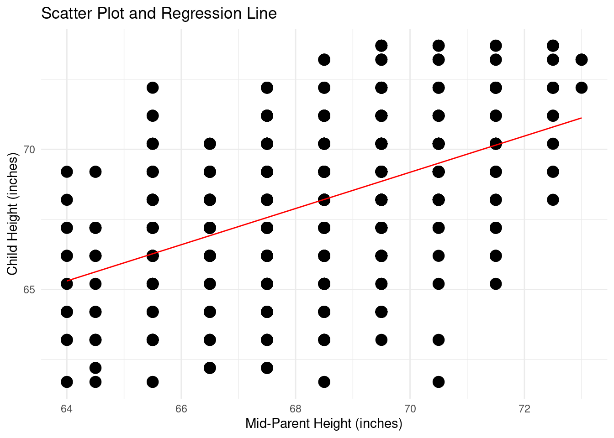
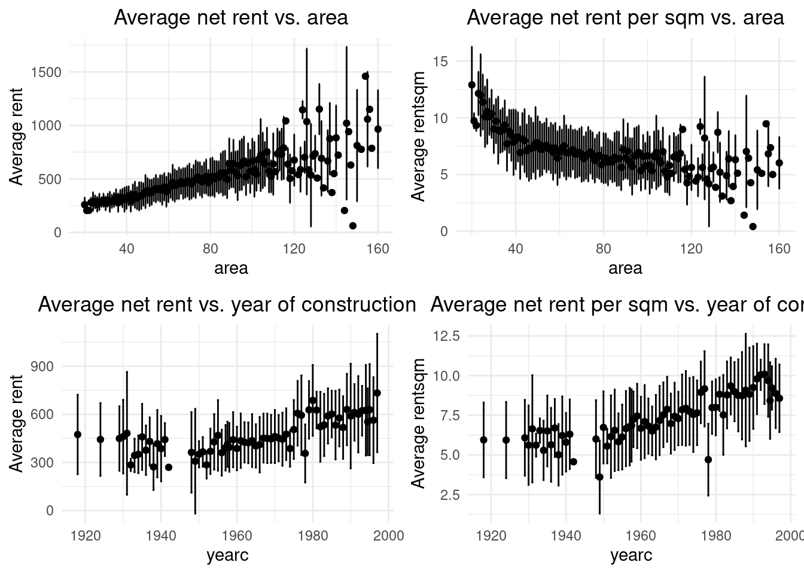
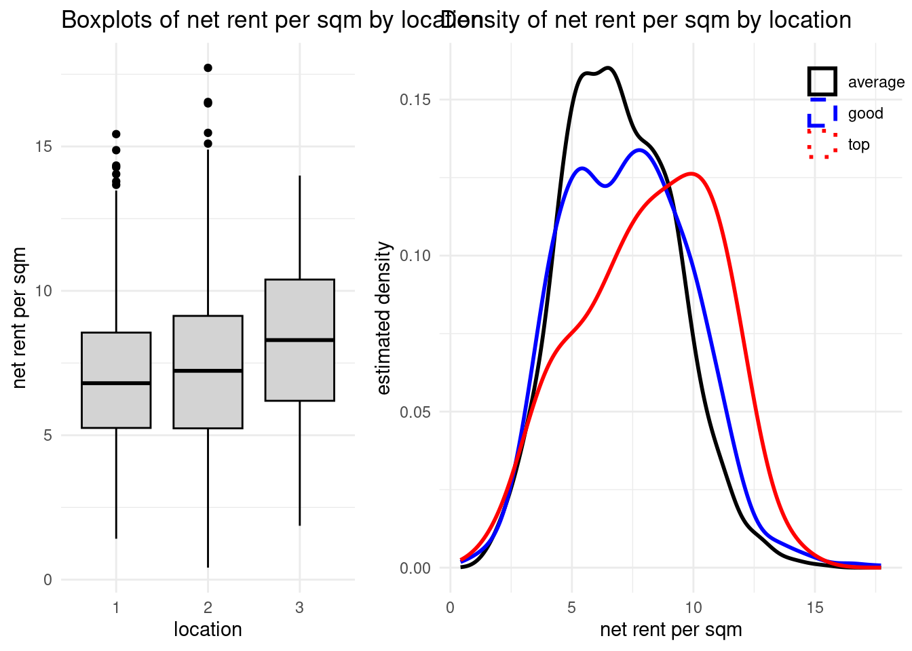

# ==============================>
# Task 1: Galton Inheredity
# ==============================>
# (a). Reconstruct the contingency table between the height of 928 adults children and the average height of their 205 set of parents.
library(HistData)
data(Galton)
Galton <- data.frame(Galton)TP01-STM
Task 1: Galton Inheredity
contigency_table <- table(Galton$parent, Galton$child)
dim(contigency_table)[1] 11 14print(contigency_table)
61.7 62.2 63.2 64.2 65.2 66.2 67.2 68.2 69.2 70.2 71.2 72.2 73.2 73.7
64 1 0 2 4 1 2 2 1 1 0 0 0 0 0
64.5 1 1 4 4 1 5 5 0 2 0 0 0 0 0
65.5 1 0 9 5 7 11 11 7 7 5 2 1 0 0
66.5 0 3 3 5 2 17 17 14 13 4 0 0 0 0
67.5 0 3 5 14 15 36 38 28 38 19 11 4 0 0
68.5 1 0 7 11 16 25 31 34 48 21 18 4 3 0
69.5 0 0 1 16 4 17 27 20 33 25 20 11 4 5
70.5 1 0 1 0 1 1 3 12 18 14 7 4 3 3
71.5 0 0 0 0 1 3 4 3 5 10 4 9 2 2
72.5 0 0 0 0 0 0 0 1 2 1 2 7 2 4
73 0 0 0 0 0 0 0 0 0 0 0 1 3 0# (b). Recontruct the scatter plot and regression line between the height of children and average height of parents
library(ggplot2)
ggplot(Galton, aes(x = parent, y = child)) +
geom_point(alpha = 1, size = 2) +
geom_smooth(method = "lm", se = FALSE, color = "red", linewidth = 0.5) +
labs(
title = "Scatter Plot and Regression Line",
x = "Mid-Parent Height (inches)",
y = "Child Height (inches)"
) +
theme_minimal()`geom_smooth()` using formula = 'y ~ x'
Task 2: Munich Rent Index of 1999
# ---------------->
# Package
# ---------------->
library(gamlss.data)
Attaching package: 'gamlss.data'The following object is masked from 'package:datasets':
sleeplibrary(ggplot2)
library(gridExtra)
library(dplyr)
Attaching package: 'dplyr'The following object is masked from 'package:gridExtra':
combineThe following objects are masked from 'package:stats':
filter, lagThe following objects are masked from 'package:base':
intersect, setdiff, setequal, unionglimpse(rent99)Rows: 3,082
Columns: 9
$ rent <dbl> 109.94872, 243.28204, 261.64102, 106.41026, 133.38461, 339.02…
$ rentsqm <dbl> 4.228797, 8.688646, 8.721369, 3.547009, 4.446154, 11.300851, …
$ area <int> 26, 28, 30, 30, 30, 30, 31, 31, 32, 33, 34, 35, 35, 36, 38, 3…
$ yearc <dbl> 1918, 1918, 1918, 1918, 1918, 1918, 1918, 1918, 1918, 1918, 1…
$ location <fct> 2, 2, 1, 2, 2, 2, 1, 1, 1, 2, 2, 1, 2, 2, 1, 1, 2, 2, 1, 2, 2…
$ bath <fct> 0, 0, 0, 0, 0, 0, 0, 0, 0, 0, 0, 0, 0, 0, 0, 0, 0, 0, 0, 0, 0…
$ kitchen <fct> 0, 0, 0, 0, 0, 0, 0, 1, 0, 0, 0, 0, 0, 0, 0, 0, 0, 0, 0, 0, 0…
$ cheating <fct> 0, 1, 1, 0, 1, 1, 0, 1, 0, 0, 0, 1, 1, 1, 0, 0, 1, 0, 1, 0, 0…
$ district <int> 916, 813, 611, 2025, 561, 541, 822, 1713, 1812, 152, 943, 171…# =============================================================================>
# (a). Reconstruct the histograms and kernel density estimates below
# =============================================================================>
data(rent99)
rent99 <- as.data.frame(rent99)
# Rent for sqm ----------------->
rent99$rentsqm <- rent99$rent / rent99$area
# Define the variables to plot --------------->
vars <- c("rent", "rentsqm", "area", "yearc")
# Create a reusable function ----------------->
hist <- function(data, var) {
if (var == "yearc") {
x_label <- "year of construction"
} else if (var == "area") {
x_label <- "area in sqm"
} else if (var == "rentsqm") {
x_label <- "net rent per sqm in Euro"
} else { # var == "rent"
x_label <- "net rent in Euro"
}
ggplot(data, aes(x = .data[[var]])) +
geom_histogram(aes(y = ..density..), bins = 30, color = "black", fill = "lightgray") +
geom_density(color = "red", linewidth = 0.5) +
labs(
title = paste("Hist. and Kernel Density:", var),
x = x_label,
y = "Estimate Density"
) +
theme_minimal()
}
# Create plots --------------->
p1 <- hist(rent99, "rent")
p2 <- hist(rent99, "rentsqm")
p3 <- hist(rent99, "area")
p4 <- hist(rent99, "yearc")
# Display all ---------------->
library(gridExtra)
grid.arrange(p1, p2, p3, p4, ncol = 2)Warning: The dot-dot notation (`..density..`) was deprecated in ggplot2 3.4.0.
ℹ Please use `after_stat(density)` instead.# =============================================================================>
# (b). Reconstruct the scatter plots below.
# =============================================================================>
# A resuable function of scatterplot Rent99 ----------->
scatterplot <- function(data, var_x, var_y){
if (var_x == "area"){
x_label = "area in sqm"
}else if (var_x == "yearc"){
x_label = "year of construction"
}else if (var_x == "rentsqm"){
x_label = "area in sqm"
}
ggplot(data, aes(x = .data[[var_x]], y = .data[[var_y]]))+
geom_point(alpha = 0.6, size = 1) +
labs(
title = "Net rent per sqm vs. area",
x = x_label,
y = "Net rent per sqm (Euro)"
) +
theme_minimal()
}
scatter1 <- scatterplot(rent99, "area", "rent")
scatter2 <- scatterplot(rent99, "area", "rentsqm")
scatter3 <- scatterplot(rent99, "yearc", "rent")
scatter4 <- scatterplot(rent99, "yearc", "rentsqm")
grid.arrange(scatter1, scatter2, scatter3, scatter4, ncol = 2, nrow =2)# ==============================================================================>
# Cluster scatter plot below
# (c). Recontruct Average net rent (left) and net rent per sqm (right) plus/minus one
# standard deviation versus area and year of construction
# ==============================================================================>
# Define function ---------------->
cluster_scatter <- function(data, x, y, title) {
main <- data %>%
group_by(.data[[x]]) %>%
summarise(
y_mean = mean(.data[[y]], na.rm = TRUE),
y_sd = sd(.data[[y]], na.rm = TRUE),
.groups = "drop"
) %>%
mutate(
ymin = y_mean - y_sd,
ymax = y_mean + y_sd
)
ggplot(main, aes(x = .data[[x]], y = y_mean)) +
geom_point(size = 1.5) +
geom_errorbar(aes(ymin = ymin, ymax = ymax), width = 0.5) +
labs(
title = title,
x = x,
y = paste("Average", y)
) +
theme_minimal() +
theme(plot.title = element_text(hjust = 0.5))
}
p1 <- cluster_scatter(rent99, "area", "rent", "Average net rent vs. area")
p2 <- cluster_scatter(rent99, "area", "rentsqm", "Average net rent per sqm vs. area")
p3 <- cluster_scatter(rent99, "yearc", "rent", "Average net rent vs. year of construction")
p4 <- cluster_scatter(rent99, "yearc", "rentsqm", "Average net rent per sqm vs. year of const.")
grid.arrange(p1, p2, p3, p4, ncol = 2)
# ===================================================================================>
# (d). Reconstruct the box plots and smooth density estimators below.
# ===================================================================================>
rent99 <- rent99 %>%
mutate(
location_label = case_when(
location == 1 ~ "average",
location == 2 ~ "good",
location == 3 ~ "top"
)
)
# ------------------> Panel 1: Boxplot of rentsqm by location
box_plot <- ggplot(rent99, aes(x = factor(location), y = rentsqm)) +
geom_boxplot(fill = "lightgray", color = "black") +
labs(
title = "Boxplots of net rent per sqm by location",
x = "location",
y = "net rent per sqm"
) +
theme_minimal()
# ------------------> Panel 2: Density curves by location
density <- ggplot(rent99, aes(x = rentsqm, color = location_label)) +
geom_density(linewidth = 1, show.legend = TRUE) +
scale_color_manual(
name = "",
values = c("average" = "black", "good" = "blue", "top" = "red"),
guide = guide_legend(override.aes = list(linetype = c(1, 2, 3)))
) +
labs(
title = "Density of net rent per sqm by location",
x = "net rent per sqm",
y = "estimated density"
) +
theme_minimal() +
theme(legend.position = c(0.9, 0.9))Warning: A numeric `legend.position` argument in `theme()` was deprecated in ggplot2
3.5.0.
ℹ Please use the `legend.position.inside` argument of `theme()` instead.grid.arrange(box_plot, density, ncol = 2, widths = c(1, 1.5))
Task 3: Fuel Consumption
# Packages ---------------------------------->
library(alr4)Loading required package: carLoading required package: carData
Attaching package: 'car'The following object is masked _by_ '.GlobalEnv':
scatterplotThe following object is masked from 'package:dplyr':
recodeLoading required package: effectslattice theme set by effectsTheme()
See ?effectsTheme for details.data(fuel2001)
fuel2001<-data.frame(fuel2001)
print(fuel2001) Drivers FuelC Income Miles MPC Pop Tax
AL 3559897 2382507 23471 94440 12737.00 3451586 18.00
AK 472211 235400 30064 13628 7639.16 457728 8.00
AZ 3550367 2428430 25578 55245 9411.55 3907526 18.00
AR 1961883 1358174 22257 98132 11268.40 2072622 21.70
CA 21623793 14691753 32275 168771 8923.89 25599275 18.00
CO 3287922 2048664 32949 85854 9722.73 3322455 22.00
CT 2650374 1458279 40640 20910 9021.35 2651452 25.00
DE 564099 382043 31255 5814 10891.30 610269 23.00
DC 328094 148769 37383 1534 6555.94 468575 20.00
FL 12743403 7471117 28145 117299 9531.23 12741821 13.60
GA 5833802 4693703 27940 115534 13248.60 6250708 7.50
HI 787820 404684 28221 4278 7108.75 949184 16.00
ID 896666 609051 24180 46310 10879.40 969166 25.00
IL 7809500 5015217 32259 138359 8239.09 9530327 19.00
IN 4116924 3120985 27011 94038 12916.90 4682392 15.00
IA 1978748 1475812 26723 113437 10258.40 2281002 20.00
KS 1871301 1236951 27816 134725 10656.70 2058489 21.00
KY 2756634 2085629 24294 78914 11301.70 3161283 16.40
LA 2718209 2151437 23334 60829 9505.31 3394854 20.00
ME 942556 590093 25623 22672 11320.00 1010273 22.00
MD 3451966 2460545 33872 30622 9673.67 4085342 23.50
MA 4610666 2720510 37992 35408 8310.86 5008007 21.00
MI 6976982 4904689 29612 121790 9959.45 7628170 19.00
MN 2961236 2545530 32101 132280 10728.30 3782817 20.00
MS 1859487 1476477 20993 73701 12286.80 2160165 18.40
MO 3862300 2958880 27445 124324 12012.80 4292175 17.00
MT 683351 467567 22569 69503 10965.00 701423 27.00
NE 1267284 812247 27829 92766 10567.40 1314974 24.50
NV 1420714 945643 30529 38658 9796.15 1537896 24.75
NH 941829 662475 33332 15508 9923.45 960593 19.50
NJ 5715089 3911837 36983 36175 8099.59 6545471 10.50
NM 1231701 885829 22203 59883 12571.40 1370134 18.50
NY 11014805 5536612 34547 112961 6876.49 14797284 22.00
NC 5884651 4060592 27194 101195 11186.00 6291182 24.10
ND 455921 334544 25068 86591 11322.40 502176 21.00
OH 7736115 5028276 28400 117267 9371.29 8789530 22.00
OK 2172394 1751701 23517 112694 12612.90 2665966 17.00
OR 2534464 1487269 28350 66784 9907.26 2673283 24.00
PA 8226202 5024671 29539 119985 8092.07 9693987 26.00
RI 660435 399113 29685 6053 7625.00 827474 29.00
SC 2849885 2217141 24321 66167 11469.60 3115130 16.00
SD 544997 402472 26115 83560 11298.90 577391 22.00
TN 4188317 2837567 26239 87826 11610.60 4445987 20.00
TX 13045727 10637488 27871 300767 10458.40 15618097 20.00
UT 1495887 945531 23907 42208 11291.30 1598531 24.50
VT 515348 331183 26901 14291 15688.40 479265 20.00
VA 4920753 3765718 31162 70721 10259.50 5529436 17.50
WA 4237845 2622633 31528 80985 8981.59 4552631 23.00
WV 1316955 818516 21915 36997 10946.10 1455370 25.65
WI 3667497 2418289 28232 112663 10337.40 4156609 27.30
WY 370713 321847 27230 27292 17494.90 381882 14.00# ============================================================================>
# (a). Create 3 more following variables and add to the fuel data consumption.
# • Fuel: 1000×FuelC/Pop
# • Dlic: 1000×Drivers/Pop
# • log(Miles): natural logarithm of Miles
# ============================================================================>
fuel2001$Fuel <- 1000 * fuel2001$FuelC / fuel2001$Pop
fuel2001$Dlic <- 1000 * fuel2001$Drivers / fuel2001$Pop
fuel2001$log <- log(fuel2001$Miles)
summary(fuel2001$Fuel) Min. 1st Qu. Median Mean 3rd Qu. Max.
317.5 575.0 626.0 613.1 666.6 842.8 summary(fuel2001$Dlic) Min. 1st Qu. Median Mean 3rd Qu. Max.
700.2 864.1 909.1 903.7 943.0 1075.3 summary(fuel2001$logMiles)Length Class Mode
0 NULL NULL plots
# ======= Packages ===========>
library(corrplot)corrplot 0.92 loadedlibrary(ggplot2)
library(GGally)Registered S3 method overwritten by 'GGally':
method from
+.gg ggplot2# Define a new columb ====================================================>
fuel2001 <- fuel2001 %>%
mutate(
Fuel = 1000 * FuelC / Pop, # Fuel consumption per capita
Dlic = 1000 * Drivers / Pop, # Licensed drivers per 1000 population
log_Miles = log(Miles) # Natural logarithm of Miles
)
# ===================================================================================>
# (b). Define response variable Based on the task goal, Fuel (fuel consumption per capital is the response variable
# ===================================================================================>
response_var <- "Fuel"
# ===================================================================>
# Study overview of each variable - Descriptive statistics
# ===================================================================>
cat("Descriptive Statistics:\n")Descriptive Statistics:print(summary(fuel2001)) Drivers FuelC Income Miles
Min. : 328094 Min. : 148769 Min. :20993 Min. : 1534
1st Qu.: 1087128 1st Qu.: 737361 1st Qu.:25323 1st Qu.: 36586
Median : 2718209 Median : 2048664 Median :27871 Median : 78914
Mean : 3750504 Mean : 2542786 Mean :28404 Mean : 77419
3rd Qu.: 4424256 3rd Qu.: 3039932 3rd Qu.:31208 3rd Qu.:112828
Max. :21623793 Max. :14691753 Max. :40640 Max. :300767
MPC Pop Tax Fuel
Min. : 6556 Min. : 381882 Min. : 7.50 Min. :317.5
1st Qu.: 9391 1st Qu.: 1162624 1st Qu.:18.00 1st Qu.:575.0
Median :10458 Median : 3115130 Median :20.00 Median :626.0
Mean :10448 Mean : 4257046 Mean :20.15 Mean :613.1
3rd Qu.:11311 3rd Qu.: 4845200 3rd Qu.:23.25 3rd Qu.:666.6
Max. :17495 Max. :25599275 Max. :29.00 Max. :842.8
Dlic log log_Miles
Min. : 700.2 Min. : 7.336 Min. : 7.336
1st Qu.: 864.1 1st Qu.:10.507 1st Qu.:10.507
Median : 909.1 Median :11.276 Median :11.276
Mean : 903.7 Mean :10.914 Mean :10.914
3rd Qu.: 943.0 3rd Qu.:11.634 3rd Qu.:11.634
Max. :1075.3 Max. :12.614 Max. :12.614 # Function to create univariate plots
create_univariate_plots <- function(data) {
# Select numeric variables for univariate analysis
numeric_vars <- c("Fuel", "Dlic", "Income", "log_Miles", "Pop", "Tax")
# Create histograms for each variable
plots <- list()
for (var in numeric_vars) {
plots[[var]] <- ggplot(data, aes(x = .data[[var]])) +
geom_histogram(bins = 15, fill = "skyblue", color = "black", alpha = 0.7) +
labs(title = paste("Distribution of", var),
x = var, y = "Frequency") +
theme_minimal()
}
for (plot in plots) {
print(plot)
}
}
# Create univariate plots
cat("\nCreating Univariate Plots...\n")
Creating Univariate Plots...create_univariate_plots(fuel2001)# Correlation plots across variables
cat("\nCorrelation Analysis:\n")
Correlation Analysis:# Select variables for correlation analysis
cor_vars <- fuel2001 %>%
select(Fuel, Dlic, Income, log_Miles, Pop, Tax)
# Calculate correlation matrix
cor_matrix <- cor(cor_vars)
print(round(cor_matrix, 3)) Fuel Dlic Income log_Miles Pop Tax
Fuel 1.000 0.469 -0.464 0.422 -0.164 -0.259
Dlic 0.469 1.000 -0.176 0.031 -0.287 -0.086
Income -0.464 -0.176 1.000 -0.296 0.265 -0.011
log_Miles 0.422 0.031 -0.296 1.000 0.507 -0.044
Pop -0.164 -0.287 0.265 0.507 1.000 -0.146
Tax -0.259 -0.086 -0.011 -0.044 -0.146 1.000# Create correlation plot
corrplot(cor_matrix, method = "color", type = "upper",
order = "hclust", tl.col = "black", tl.srt = 45,
title = "Correlation Plot of Fuel Consumption Variables",
mar = c(0, 0, 1, 0))# Alternative correlation plot using ggpairs
cat("\nCreating Detailed Correlation Plot...\n")
Creating Detailed Correlation Plot...ggpairs(cor_vars) +
labs(title = "Pairwise Relationships - Fuel Consumption Data") +
theme_minimal()## Visualize relationship between response and predictor variables
cat("\nCreating Response-Predictor Relationship Plots...\n")
Creating Response-Predictor Relationship Plots...# Create scatter plots of Fuel vs each predictor
predictors <- c("Dlic", "Income", "log_Miles", "Tax")
response_predictor_plots <- list()
for (predictor in predictors) {
response_predictor_plots[[predictor]] <- ggplot(fuel2001, aes(x = .data[[predictor]], y = Fuel)) +
geom_point(size = 2, alpha = 0.7, color = "steelblue") +
geom_smooth(method = "lm", se = TRUE, color = "red", linetype = "solid") +
labs(title = paste("Fuel Consumption vs", predictor),
x = predictor, y = "Fuel Consumption per Capita") +
theme_minimal()
}
# Print all response-predictor plots
for (plot in response_predictor_plots) {
print(plot)
}`geom_smooth()` using formula = 'y ~ x'`geom_smooth()` using formula = 'y ~ x'`geom_smooth()` using formula = 'y ~ x'`geom_smooth()` using formula = 'y ~ x'# Additional detailed analysis
cat("\n=== ADDITIONAL INSIGHTS ===\n")
=== ADDITIONAL INSIGHTS ===# State with highest and lowest fuel consumption
max_fuel_state <- fuel2001[which.max(fuel2001$Fuel), "row.names"]
min_fuel_state <- fuel2001[which.min(fuel2001$Fuel), "row.names"]
cat("State with highest fuel consumption per capita:", max_fuel_state, "\n")State with highest fuel consumption per capita: cat("State with lowest fuel consumption per capita:", min_fuel_state, "\n")State with lowest fuel consumption per capita: # Basic linear model to see initial relationships
cat("\nInitial Linear Model Summary:\n")
Initial Linear Model Summary:initial_model <- lm(Fuel ~ Dlic + Income + log_Miles + Tax, data = fuel2001)
print(summary(initial_model))
Call:
lm(formula = Fuel ~ Dlic + Income + log_Miles + Tax, data = fuel2001)
Residuals:
Min 1Q Median 3Q Max
-163.145 -33.039 5.895 31.989 183.499
Coefficients:
Estimate Std. Error t value Pr(>|t|)
(Intercept) 154.192845 194.906161 0.791 0.432938
Dlic 0.471871 0.128513 3.672 0.000626 ***
Income -0.006135 0.002194 -2.797 0.007508 **
log_Miles 26.755176 9.337374 2.865 0.006259 **
Tax -4.227983 2.030121 -2.083 0.042873 *
---
Signif. codes: 0 '***' 0.001 '**' 0.01 '*' 0.05 '.' 0.1 ' ' 1
Residual standard error: 64.89 on 46 degrees of freedom
Multiple R-squared: 0.5105, Adjusted R-squared: 0.4679
F-statistic: 11.99 on 4 and 46 DF, p-value: 9.331e-07# Create a comprehensive summary table
cat("\nComprehensive Summary Table:\n")
Comprehensive Summary Table:summary_table <- fuel2001 %>%
select(Fuel, Dlic, Income, log_Miles, Tax) %>%
summarise(across(everything(),
list(Mean = mean, SD = sd, Min = min, Max = max),
.names = "{.col}_{.fn}")) %>%
round(3)
print(summary_table) Fuel_Mean Fuel_SD Fuel_Min Fuel_Max Dlic_Mean Dlic_SD Dlic_Min Dlic_Max
1 613.129 88.96 317.492 842.792 903.678 72.858 700.195 1075.288
Income_Mean Income_SD Income_Min Income_Max log_Miles_Mean log_Miles_SD
1 28403.9 4451.637 20993 40640 10.914 1.031
log_Miles_Min log_Miles_Max Tax_Mean Tax_SD Tax_Min Tax_Max
1 7.336 12.614 20.155 4.545 7.5 29Section 2: The nassCDS data
Problem: In this section of the exam, we focus on the nassCDS data which is a US data from police-reported car crashes (1997-2002) in which there is a harmful event (people or property). Data are restricted to front-seat occupants, include only a subset of the variables recorded. More information about the dataset can be found using the following link: https://www.rdocumentation.org/packages/DAAG/versions/1.22/topics/nassCDS. The data is a part of the DAAG R package. To get an access to the data you first need to install the package.
Question 1:
# ================================================>
# (1). How many individuals used seatbelt?
# ================================================>
library("DAAG")
Attaching package: 'DAAG'The following object is masked from 'package:alr4':
aisThe following object is masked from 'package:car':
vifdata(nassCDS)
names(nassCDS) [1] "dvcat" "weight" "dead" "airbag" "seatbelt"
[6] "frontal" "sex" "ageOFocc" "yearacc" "yearVeh"
[11] "abcat" "occRole" "deploy" "injSeverity" "caseid" head(nassCDS) dvcat weight dead airbag seatbelt frontal sex ageOFocc yearacc yearVeh
1 25-39 25.069 alive none belted 1 f 26 1997 1990
2 10-24 25.069 alive airbag belted 1 f 72 1997 1995
3 10-24 32.379 alive none none 1 f 69 1997 1988
4 25-39 495.444 alive airbag belted 1 f 53 1997 1995
5 25-39 25.069 alive none belted 1 f 32 1997 1988
6 40-54 25.069 alive none belted 1 f 22 1997 1985
abcat occRole deploy injSeverity caseid
1 unavail driver 0 3 2:3:1
2 deploy driver 1 1 2:3:2
3 unavail driver 0 4 2:5:1
4 deploy driver 1 1 2:10:1
5 unavail driver 0 3 2:11:1
6 unavail driver 0 3 2:11:2str(nassCDS)'data.frame': 26217 obs. of 15 variables:
$ dvcat : Ord.factor w/ 5 levels "1-9km/h"<"10-24"<..: 3 2 2 3 3 4 5 5 2 2 ...
$ weight : num 25.1 25.1 32.4 495.4 25.1 ...
$ dead : Factor w/ 2 levels "alive","dead": 1 1 1 1 1 1 1 2 1 1 ...
$ airbag : Factor w/ 2 levels "none","airbag": 1 2 1 2 1 1 1 1 1 1 ...
$ seatbelt : Factor w/ 2 levels "none","belted": 2 2 1 2 2 2 2 1 2 2 ...
$ frontal : num 1 1 1 1 1 1 1 1 0 1 ...
$ sex : Factor w/ 2 levels "f","m": 1 1 1 1 1 1 2 2 2 1 ...
$ ageOFocc : num 26 72 69 53 32 22 22 32 40 18 ...
$ yearacc : num 1997 1997 1997 1997 1997 ...
$ yearVeh : num 1990 1995 1988 1995 1988 ...
$ abcat : chr "unavail" "deploy" "unavail" "deploy" ...
$ occRole : chr "driver" "driver" "driver" "driver" ...
$ deploy : num 0 1 0 1 0 0 0 0 0 0 ...
$ injSeverity: num 3 1 4 1 3 3 3 4 1 0 ...
$ caseid : chr "2:3:1" "2:3:2" "2:5:1" "2:10:1" ...belt <- sum(nassCDS$seatbelt == "belted" , na.rm = TRUE)
cat("There are", {belt}, "individuals used seatbelt")There are 18573 individuals used seatbelt# =================================================================================
# What is the distribution of seatbelt usage across the accident’s outcome factor ? Produce a 2X2 table that shows the number of seatbelt users (belted/none) and accident’s outcome (alive/dead)?
# =================================================================================
tbl <- table(nassCDS$seatbelt, nassCDS$dead)
tbl
alive dead
none 6964 680
belted 18073 500(3). Write a function that can be used to conduct inference for proportions in two independent populations. The null hypothesis is that there is no difference between the proportions in the two populations. Test the null hypothesis against a two sided alternative. The input of the function should be the 2X2 table in the previous item (Question 1.2) and the output should be the test statistic and the p value. Apply your function to test the null hypothesis that the proportion of deaths among individuals who used seatbelt is equal to the proportion of deaths among the individuals who did not use seatbelt.
# Create a 2x2 table
contingency_table <- table(nassCDS$seatbelt, nassCDS$dead)
print("2x2 Contingency Table:")[1] "2x2 Contingency Table:"print(contingency_table)
alive dead
none 6964 680
belted 18073 500# More readable format
cat("\nSeatbelt Usage vs Accident Outcome:\n")
Seatbelt Usage vs Accident Outcome:cat(" Alive Dead\n") Alive Deadcat("belted ", contingency_table["belted", "alive"], " ", contingency_table["belted", "dead"], "\n")belted 18073 500 cat("none ", contingency_table["none", "alive"], " ", contingency_table["none", "dead"], "\n")none 6964 680 # H_{0} : p_{1} = p_{2} vs H_{a} : p_{1} != p_{2}
# Function for two proportion z-test
two_prop_test <- function(contingency_table) {
# Extract values from contingency table
n1 <- sum(contingency_table["belted", ]) # total belt users
n2 <- sum(contingency_table["none", ]) # total non-users
x1 <- contingency_table["belted", "dead"] # deaths among belt users
x2 <- contingency_table["none", "dead"] # deaths among non-users
# Calculate proportions
p1 <- x1 / n1
p2 <- x2 / n2
p_pool <- (x1 + x2) / (n1 + n2)
# Calculate test statistic
z_stat <- (p1 - p2) / sqrt(p_pool * (1 - p_pool) * (1/n1 + 1/n2))
# Calculate two-sided p-value
p_value <- 2 * (1 - pnorm(abs(z_stat)))
# Return results
return(list(test_statistic = z_stat, p_value = p_value))
}
# Apply the function to our data
test_results <- two_prop_test(contingency_table)
cat("\nTwo Proportion Z-Test Results:\n")
Two Proportion Z-Test Results:cat("Test Statistic:", test_results$test_statistic, "\n")Test Statistic: -22.02001 cat("P-value:", test_results$p_value, "\n")P-value: 0 # Interpretation
if (test_results$p_value < 0.05) {
cat("Conclusion: Reject the null hypothesis - there is a significant difference in death proportions.\n")
} else {
cat("Conclusion: Fail to reject the null hypothesis - no significant difference in death proportions.\n")
}Conclusion: Reject the null hypothesis - there is a significant difference in death proportions.# Create a barplot
par(mfrow = c(1, 2)) # Set up side-by-side plots
# Barplot 1: Counts by seatbelt usage and outcome
barplot(contingency_table,
main = "Seatbelt Usage by Accident Outcome",
xlab = "Accident Outcome",
ylab = "Count",
col = c("lightblue", "lightcoral"),
legend = rownames(contingency_table),
beside = TRUE)
# Barplot 2: Proportions (more informative)
prop_table <- prop.table(contingency_table, margin = 1) * 100
barplot(prop_table,
main = "Death Rate by Seatbelt Usage (%)",
xlab = "Seatbelt Usage",
ylab = "Percentage",
col = c("lightgreen", "salmon"),
legend = colnames(prop_table),
ylim = c(0, 100))# Reset plot parameters
par(mfrow = c(1, 1))
# Alternative visualization using ggplot2 (if preferred)
if (require(ggplot2)) {
library(ggplot2)
# Create a more polished plot
ggplot(as.data.frame(contingency_table),
aes(x = Var1, y = Freq, fill = Var2)) +
geom_bar(stat = "identity", position = "dodge") +
labs(title = "Seatbelt Usage Distribution by Accident Outcome",
x = "Seatbelt Usage",
y = "Count",
fill = "Outcome") +
theme_minimal()
}Question 2:
Mean and Standard Deviation of age by accident
# Calculate mean and standard deviation by group age_stats <- aggregate(ageOFocc ~ dead, data = nassCDS, FUN = function(x) c(mean = mean(x), sd = sd(x))) # Display the results cat("Mean and Standard Deviation of Age by Accident Outcome:\n")Mean and Standard Deviation of Age by Accident Outcome:for(i in 1:nrow(age_stats)) { outcome <- age_stats$dead[i] mean_age <- age_stats$ageOFocc[i, "mean"] sd_age <- age_stats$ageOFocc[i, "sd"] cat(outcome, ": Mean =", round(mean_age, 2), ", SD =", round(sd_age, 2), "\n") }1 : Mean = 36.86 , SD = 17.66 2 : Mean = 44.62 , SD = 21.32# Alternative approach using tapply cat("\nAlternative calculation using tapply:\n")Alternative calculation using tapply:mean_age_by_outcome <- tapply(nassCDS$ageOFocc, nassCDS$dead, mean) sd_age_by_outcome <- tapply(nassCDS$ageOFocc, nassCDS$dead, sd) cat("Alive - Mean:", round(mean_age_by_outcome["alive"], 2), "SD:", round(sd_age_by_outcome["alive"], 2), "\n")Alive - Mean: 36.86 SD: 17.66cat("Dead - Mean:", round(mean_age_by_outcome["dead"], 2), "SD:", round(sd_age_by_outcome["dead"], 2), "\n")Dead - Mean: 44.62 SD: 21.32Box plot and Data point
# Create boxplot with data points par(mfrow = c(1, 1)) # Basic boxplot boxplot(ageOFocc ~ dead, data = nassCDS, main = "Distribution of Occupant Age by Accident Outcome", xlab = "Accident Outcome", ylab = "Age of Occupant", col = c("lightgreen", "lightcoral"), ylim = c(0, 100)) stripchart(ageOFocc ~ dead, data = nassCDS, method = "jitter", jitter = 0.2, pch = 16, col = adjustcolor("blue", alpha.f = 0.3), vertical = TRUE, add = TRUE) # Add mean points means <- tapply(nassCDS$ageOFocc, nassCDS$dead, mean) points(1:2, means, pch = 18, col = "red", cex = 2) text(1:2, means, labels = paste("Mean:", round(means, 1)), pos = 3, col = "red")Calculate 95% confidence interval for mean difference
t_test_result <- t.test(ageOFocc ~ dead, data = nassCDS, conf.level = 0.95) cat("Two-Sample t-Test Results:\n")Two-Sample t-Test Results:print(t_test_result)Welch Two Sample t-test data: ageOFocc by dead t = -12.302, df = 1256.4, p-value < 2.2e-16 alternative hypothesis: true difference in means between group alive and group dead is not equal to 0 95 percent confidence interval: -8.995522 -6.520963 sample estimates: mean in group alive mean in group dead 36.85701 44.61525ci_lower <- t_test_result$conf.int[1] ci_upper <- t_test_result$conf.int[2] mean_diff <- t_test_result$estimate[1] - t_test_result$estimate[2] cat("\n95% Confidence Interval for Mean Age Difference (Alive - Dead):\n")95% Confidence Interval for Mean Age Difference (Alive - Dead):cat("Mean difference:", round(mean_diff, 4), "\n")Mean difference: -7.7582cat("95% CI: [", round(ci_lower, 4), ", ", round(ci_upper, 4), "]\n")95% CI: [ -8.9955 , -6.521 ]
Question 3:
Visualize the distribution of the occupant age by sex.
plot1 <- ggplot(nassCDS, aes(x = ageOFocc, fill = sex)) + geom_density(alpha = 0.6) + labs(title = "Distribution of Occupant Age by Sex", x = "Age of Occupant", y = "Density", fill = "Sex") + theme_minimal() plot2 <- ggplot(nassCDS, aes(x = ageOFocc, fill = sex)) + geom_histogram(alpha = 0.6, position = "identity", bins = 30) + labs(title = "Distribution of Occupant Age by Sex", x = "Age of Occupant", y = "Count", fill = "Sex") + theme_minimal() grid.arrange(plot1, plot2, ncol = 2)How many occupants over the age of 50 years old survived the accident?
survived_over_50 <- sum(nassCDS$ageOFocc > 50 & nassCDS$dead == 0, na.rm = TRUE) cat("Occupants over 50 who survived:", survived_over_50, "\n\n")Occupants over 50 who survived: 0Add a binary variable AgeOFocc_class that takes the value of 1 when the occupant age is over 50 years and 0 for when the occupant age is 50 years or less.
nassCDS$AgeOFocc_class <- ifelse(nassCDS$ageOFocc > 50, 1, 0) cat("AgeOFocc_class variable added successfully\n")AgeOFocc_class variable added successfullycat("Distribution: 0 =", sum(nassCDS$AgeOFocc_class == 0), ", 1 =", sum(nassCDS$AgeOFocc_class == 1), "\n\n")Distribution: 0 = 20619 , 1 = 5598Create a data frame, nassCDS_o50, containing occupants older than 50 years old. This data frame should contain the variables dead, airbag, weight, and injSeverity. Remove the observations with missing values
Find the dimension of the data
nassCDS_o50 <- nassCDS[nassCDS$ageOFocc > 50, c("dead", "airbag", "weight", "injSeverity")] nassCDS_o50 <- na.omit(nassCDS_o50) cat("4: nassCDS_o50 data frame created\n")4: nassCDS_o50 data frame createdcat("5: Dimensions of new data:", dim(nassCDS_o50), "\n")5: Dimensions of new data: 5573 4